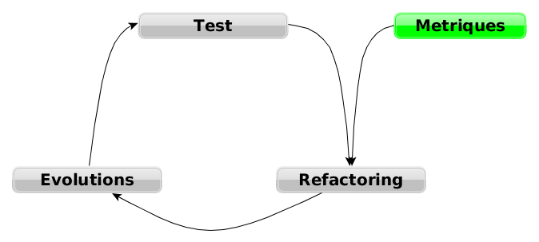
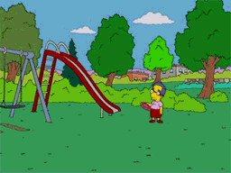

Dette Technique
responsabilité collective, solution individuelle?
Présenté par Brice Favre / @briceatwork
AVERTISSEMENT : Malgré le soin porté à la rédaction de ces slides, ils peuvents contenir des traces de trolls, de blagues à deux balles et de bullshit.
Allergiques s'abstenir
Genesis
Qu'est ce que la dette technique?
Shipping first time code is like going into debt. A little debt speeds development so long as it is paid back promptly with a rewrite... The danger occurs when the debt is not repaid. Every minute spent on not-quite-right code counts as interest on that debt.
Ward Cunningham
Les composantes
- La dette elle-même
- Le remboursement des intérêts
- Le remboursement de la dette
Les conditions de l'expérience
{
"Criticité" : "Moyenne",
"Technologies" : "Variées",
"Qualité" : "Moyenne",
"BusFactor" : "On"
}
Déroulement
Commençons par...
Décrassage

Tâches
- Lire du code
- Documenter
- Intégrer des évolutions
Première release

Deuxième phase
Différents cas
Je ne sais pas

Solution
Déléguer ou documenter
Agir sur les dettes en...
Évitant de les aggraver.
Je pense savoir
Trouvez vos pairs
Je suis ton pair
- Du pair programming
- De la revue de pair
Agir sur la dette
- Partager les compétences
- Faire progresser l'existant
Je me débrouille comme un chef

Mais je reste humble
Schéma de fonctionnement

Agir sur la dette en...
- Consultant les indicateurs
- Refactorisant le code
- Testant, testant, testant
Résultat
Deuxième release

Alors solution individuelle?

Que faire en tant qu'individu?

Capteur
Expérimentateur
Initiateur
En conclusion
Soyez le changement que vous voulez voir.